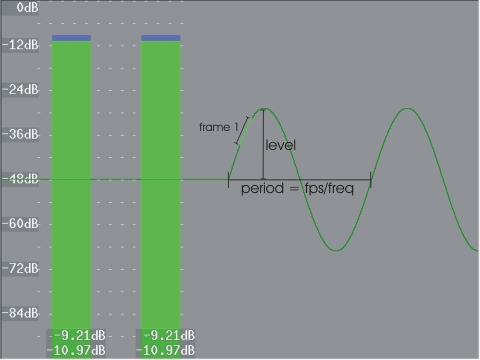

Tone (float "length", float
"frequency", int "samplerate", int "channels",
string "type", float "level")
This will generate sound (a waveform) at a given frequency for a given length of time in seconds. Type can be "Silence", "Sine" (default), "Noise", "Square", "Triangle" or "Sawtooth". level is the amplitude of the waveform (which is maximal if level=1.0).
 |
| Tone(frequency=2, samplerate= 48000, channels= 2, type= "sine", level=0.4) |
In the figure above, a sinus is generated (on a grey clip with framerate 24 fps). The period of the waveform (in frames) is the framerate divided by frequency (or fps/freq, which is 24/2=12 frames in our example). The part of the graph which is light-green represents all samples of the frame under consideration (which is frame 1 here). The number of samples in a particular frame is given by the samplerate divided by the framerate (which is 48000/24 = 2000 samples in our example). (Note that the bars are made with Histogram and the graph with the AudioGraph plugin.)
More generally, the waveform above is described by
g(n,s) = level * sin(2*pi*(frequency*n/framerate + s*frequency/samplerate))
with "n" the frame and "s" the sample under consideration (note that s runs from 0 to samplerate/framerate - 1).
In the example above, this reduces to
g(n,s) = 0.4 * sin(2*pi*(2*n/24 + s*2/48000))
with "n" the frame and "s" the sample under consideration (note that s runs from 0 to 1999).
Changes:
| v2.54 | Initial release. |
| v2.56 | Added level. |
$Date: 2015/01/12 01:20:43 $